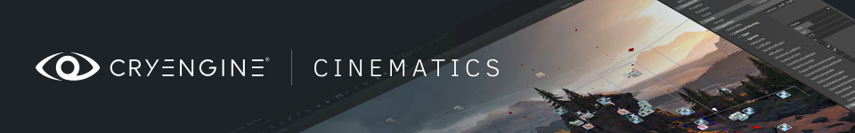

Cinematics Overview
The cinematics tool located within CRYENGINE is named Track View and allows for complex cutscenes or keyframed animation events. The diversity of this tool means it allows for more versatilty with your camera and depth of field (DOF). Or that you need to cut from camera to camera within a sequence. The options are there to play out your cutscene or render the output for usage elsewhere.